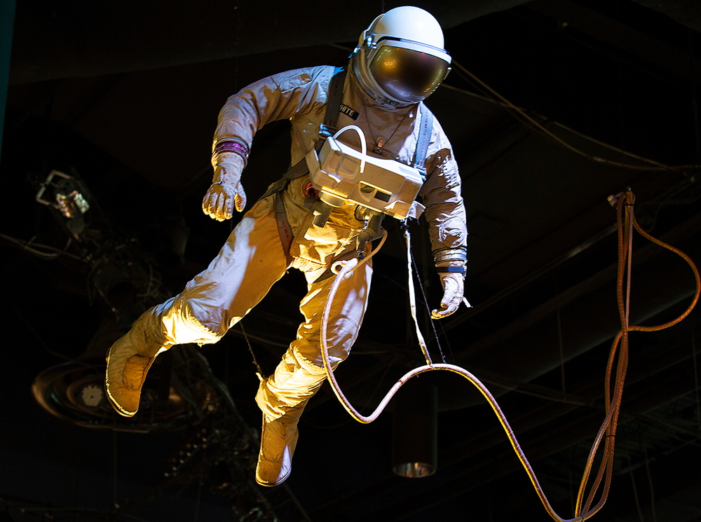
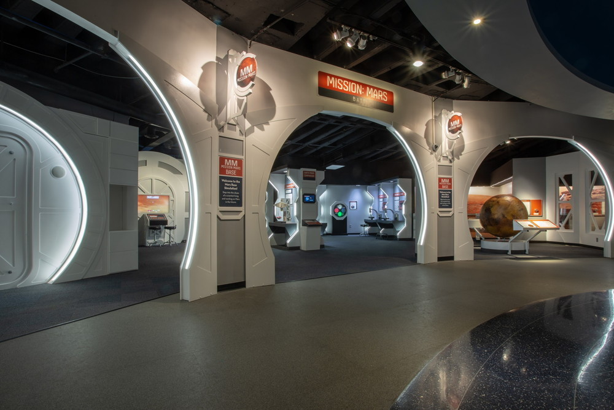
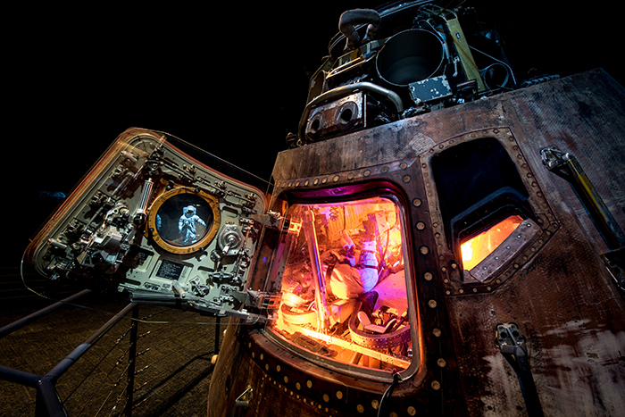
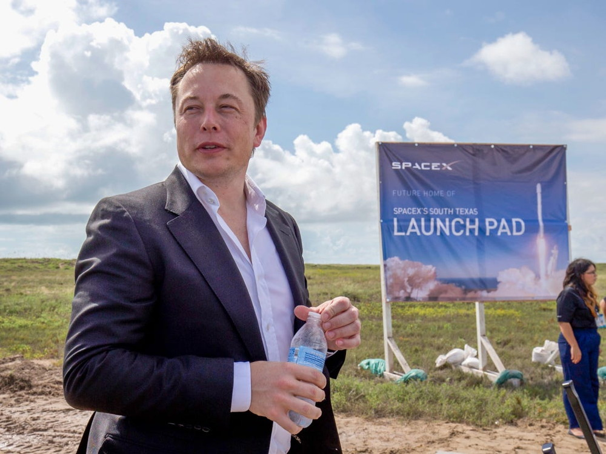

Astronaut Suits
Astronaut Gallery is home to one of the world’s most comprehensive collections of astronaut apparel and spacesuits. See a diverse collection of spacesuits used for everything from training flights to spacewalks on the Moon.
This training suit is identical to the one White wore on his famous first walk in space. A spacesuit had to be made to meet the objectives of the Gemini program, which required traveling outside the spacecraft and performing extravehicular activity (EVA).
The newly designed suits had to meet the toughest requirements and were designed to protect astronauts in the most extreme environment, space. They needed to protect against extreme temperature differences and provide a pressurized, breathable atmosphere for the astronaut. Gemini spacesuits met these minimum life support requirements and afforded some flexibility of movement.

Mission Mars
Discover what it takes to travel to Mars, what hardware will get us to the fourth planet in our solar system and how humans may live on the red planet in the next few decades.
NASA’s Space Launch System (SLS), the most advanced and powerful rocket under design, will launch future explorers on their journey to Mars. Inside the Mission Mars exhibit, stand beside a towering, 45-foot 1/8th scale model of the SLS and see the space launch system main engine, RS-25, the most efficient engine ever built.
One of the most inhospitable aspects of life on Mars is radiation. There is a massive amount of radiation in space, mainly originating outside the solar system. Astronauts will have to shield themselves from this radiation during the journey.

Starship
Starship Gallery at Texas Museum of Natural Science is home to multiple flown spacecraft and national treasures. Get an up-close look at some of the most amazing artifacts that trace the progression of human space exploration – the Apollo 17 Command Module, a full-size Skylab Training module, a Moon rock you can touch and more!
In its Starship Gallery, TMNS has a full-scale replica of Explorer 1, the first American satellite sent into orbit. Explorer 1’s launch on Jan. 31, 1958, just months after the sensational flights of the Soviet Union’s Sputnik 1 and 2, marked the official beginning of the Cold War Space Race for the United States and was a definite boost for America as it struggled with the Soviet Union over the conquest of space.

SpaceX
Elon Musk leads Space Exploration Technologies (SpaceX), where he oversees the development and manufacturing of advanced rockets and spacecraft for missions to and beyond Earth orbit.
Founded in 2002, SpaceX’s mission is to enable humans to become a spacefaring civilization and a multi-planet species by building a self-sustaining city on Mars. In 2008, SpaceX’s Falcon 1 became the first privately developed liquid-fuel launch vehicle to orbit the Earth. Following that milestone, NASA awarded SpaceX with contracts to carry cargo and crew to the International Space Station (ISS). A global leader in commercial launch services, SpaceX is the first commercial provider to launch and recover a spacecraft from orbit, attach a commercial spacecraft to the ISS and successfully land an orbital-class rocket booster.
Elon also leads Tesla, which makes electric cars, giant batteries and solar products. Previously, Elon co-founded and sold PayPal, the world's leading Internet payment system, and Zip2, one of the first internet maps and directions services, which helped bring major publishers, including the New York Times and Hearst, online.